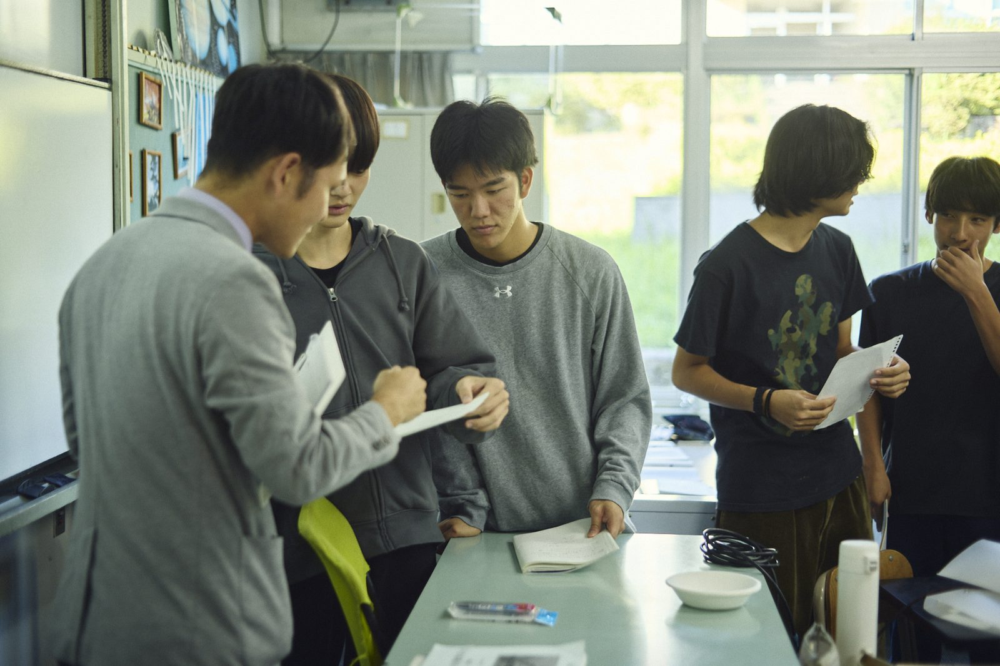
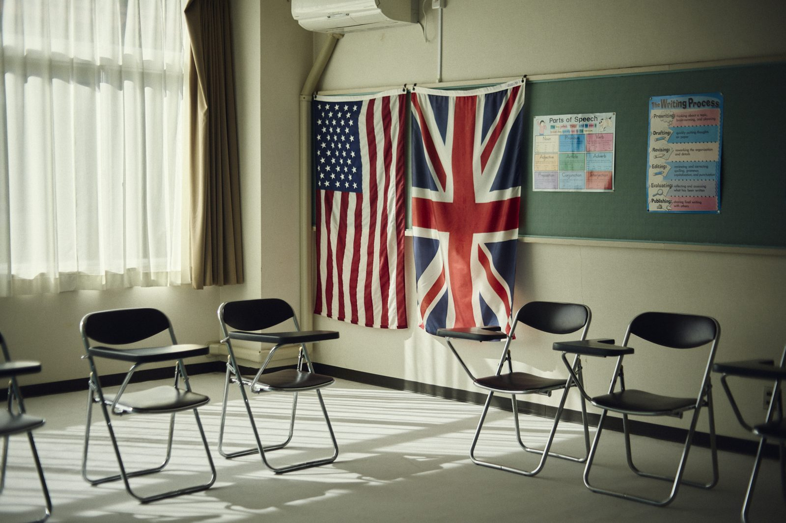
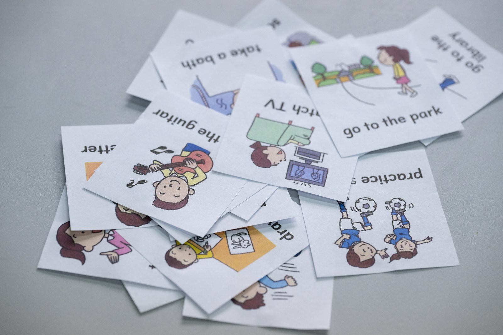
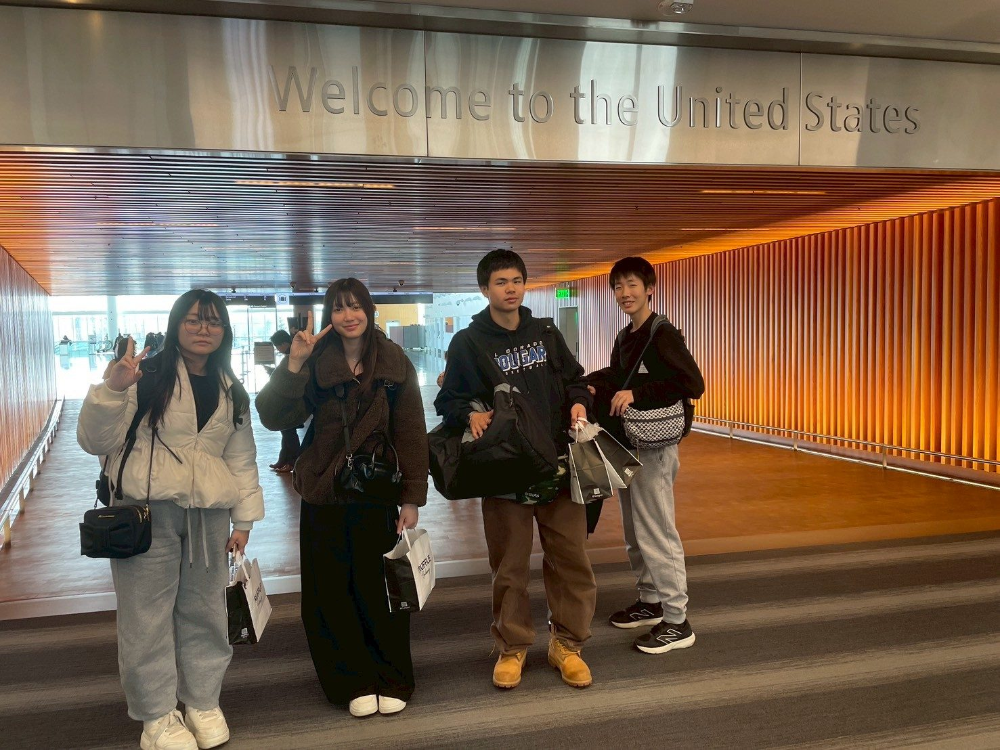

Learn
答えを覚えるより、問いを持つ。
LEARN ｜ 知性少人数だから、一人ひとりの問いに先生が向き合える。探究は「究める」ではなく、「求める」学びです。

SMALL CLASSES
一人ひとりに、目が届く。

少人数クラス、高校は習熟度別も
少人数のクラスで、一人ひとりに目が届く授業を行っています。高校では数学・英語・物理基礎・化学基礎でBasicクラスとAdvancedクラスの習熟度別授業を行い、2年次からは選択科目を多く開講。自分で選んで学びを積み重ねていきます。
1:8教師と生徒の比率
学年担当制
担任と寮監が学年ごとにチームを組み、学校と寮の両面から生徒を見守ります。定期的な面談で、学習や生活の様子を共有します。
複数の大人で見守る
担任だけに任せず、複数の教員が一人の生徒に関われる仕組み。相談しやすい大人が、きっと見つかります。
CURRICULUM MAP
中学・高校の学び
教科の学びに、寮教育・宗教教育・探求・労作・体験プログラムが重なります。
| 中学校（1〜3年） | 高等学校（1〜3年） | |
|---|---|---|
| 寮教育 | 他者理解と尊重（生活指導・性教育Ⅰ）→ 自己省察（生活指導・性教育Ⅱ）→ 他者への発信・リーダー育成 | 他者理解 → 集団での責任感・フォロワーシップ → 人生の目標設定・リーダーシップ・福音宣教者としての自覚 |
| 信仰の歩み | 神との出会い → 神の愛を理解する → 神の愛に応える | |
| 教科科目 | 3年間で積み重ねる基礎教科科目（国語・数学・理科・社会・英語・音楽・美術・保健体育・技術家庭） | 必修科目と選択科目（学年ごとに異なる）。言語文化・現代の国語・論理国語・古典探究・小論文／数学ⅠⅡⅢ・数学ABC／物理・化学・生物（基礎含む）／歴史総合・地理総合・公共・日本史探究・世界史探究／芸術（音楽・美術・木工・書道）／家庭基礎・情報・保健体育。数学・英語・物理基礎・化学基礎は習熟度別クラス |
| 英語教育 | 英語の授業にALTが参加。研修旅行・英検・英会話（オンライン含む）・英語暗唱聖句・英語SHR | コミュニケーション英語ⅠⅡⅢ・論理表現ⅠⅡⅢ。選択科目のAll English Class、短期留学制度（希望者） |
| 宗教教育 | 聖書。キリスト教教育を土台とする倫理観や人生観を学ぶ | 聖書・Bible、キリスト教コア探求（CMM・ACTS・教理探究） |
| 探求 | ソアン・総合探求。地域探索・就業体験・魅力発信・地域貢献・特別授業。地域とともに学び、“気付きの引き出し”を増やす3年間 | ソアン探求（アカデミック・プロジェクトの2ベース）→ 地域探求 → 進路探求 |
| 労作教育 | 班別農業・作業（総合的な学習の時間） | 労作（週5時間）。農業・キャンパス・総合管理・木工・寮・校舎・食堂・宗教・ベーカリー・メディア・写真・散髪・体育 |
| 体験プログラム | 教会訪問・地域保全活動 | 災害復興ボランティア・海外ボランティア |
表は横にスクロールできます。
ENGLISH
英語が使えると、やりたいことが広がる。

中学校ALTと、生きた英語
中学校の英語の授業にもALT（外国語指導助手）が参加。教科書の英語だけでなく、生きた英語に日常的に触れながら学びます。
研修旅行英検英会話（オンライン含む）英語暗唱聖句英語SHR

高校｜選択科目All English Class
英語力をさらに伸ばしたい生徒のための選択科目。外国人教員が、1コマ50分すべてを英語で行う授業です。英検準2級以上の取得と、担当教諭による面談が受講の条件です。

STUDY ABROAD短期留学制度
アメリカの提携校「Auburn Adventist Academy」への短期留学制度があります。3ヶ月コースと1ヶ月コースがあり、学校の成績や英語力の条件はありますが、誰でも希望することができます。
INVITATION
読むだけでは、三育はわからない。
ひとつでも気になったら、一度キャンパスへ。見学も、宿泊体験も、相談だけでも大丈夫です。